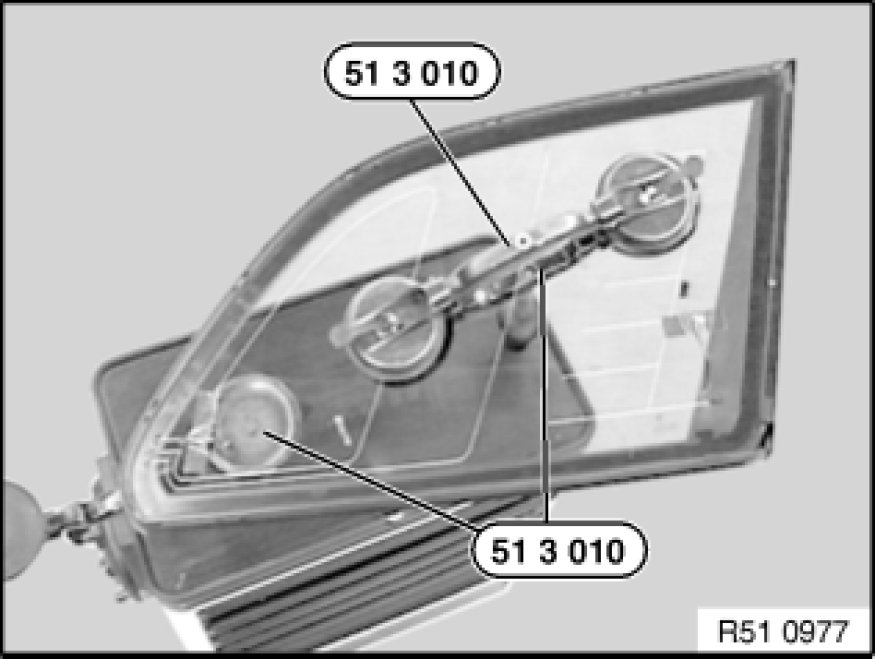
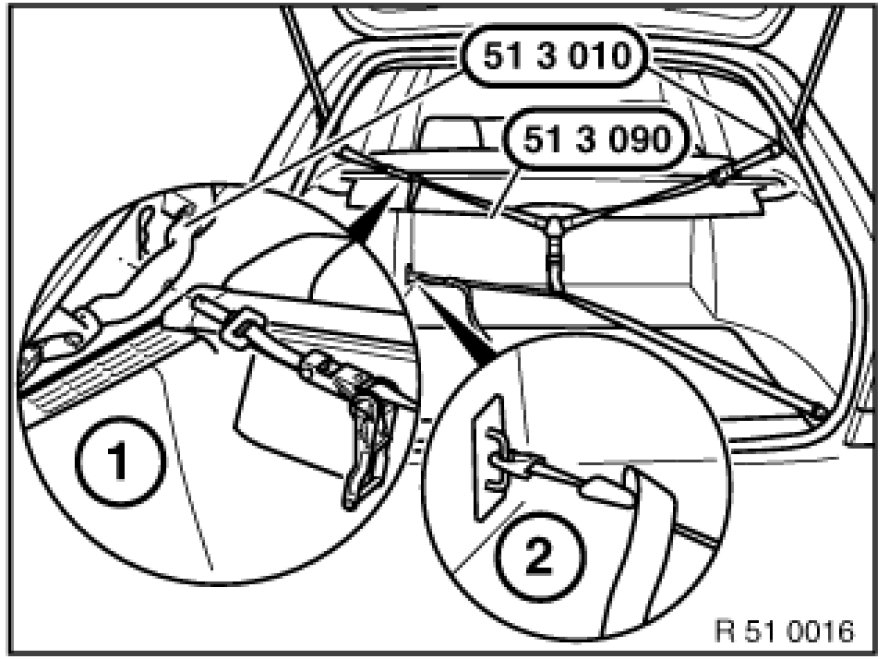
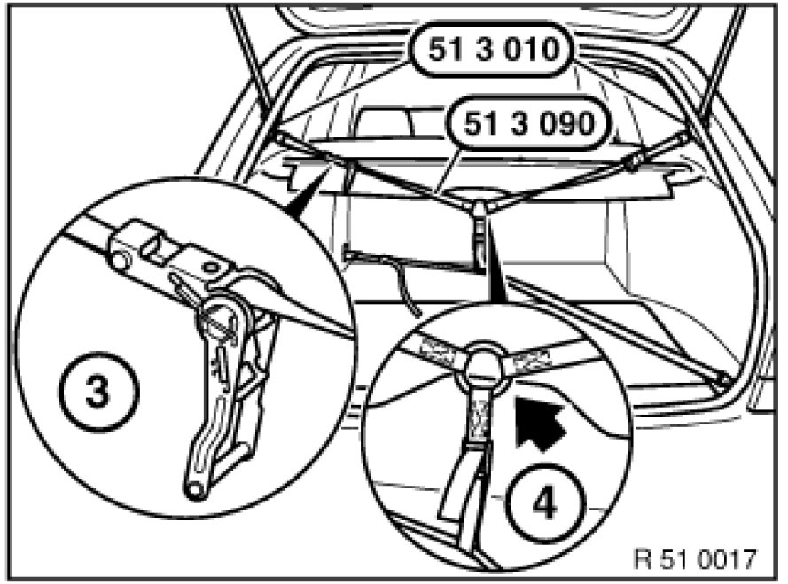

51 36 ... Firmly Tensioning Rear Left or Right Side Window
51 36 ... - Firmly tensioning rear left or right side window

Special tools required:
- 51 3 010 51 3 010 Suction Lift (2 X)
- 51 3 090 51 3 090 Clamping Strap

Dampen down suction faces.
Fit special tool 51 3 010 51 3 010 Suction Lift (2 X) to tool trolley and secure side window.
Secure special tool 51 3 010 51 3 010 Suction Lift (2 X) (without joint) to inside of window.

Secure special tool 51 3 010 51 3 010 Suction Lift (2 X) (without joint) opposite to inside of window.
Secure special tool 51 3 090 51 3 090 Clamping Strap (tensioning belt) at top to special tool 51 3 010 51 3 010 Suction Lift (2 X) (1). Hook tensioning belt at bottom diagonally in lashing eyes and pull tight (2).

Tighten middle belt tensioner (4) so that special tool 51 3 090 51 3 090 Clamping Strap is at a 90° angle to side window.
Tighten top belt tensioner (3) until eye can be pulled approx. 20 mm toward rear (4).